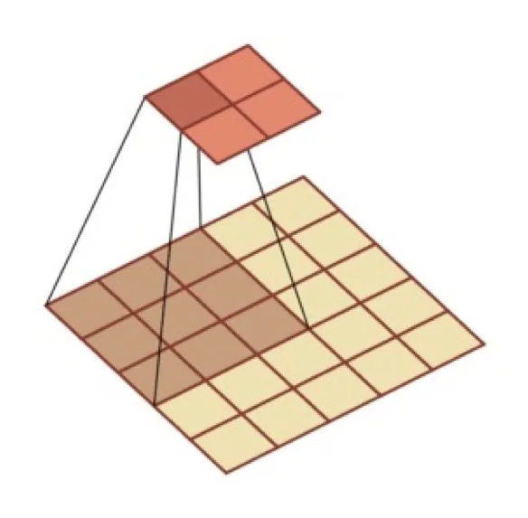
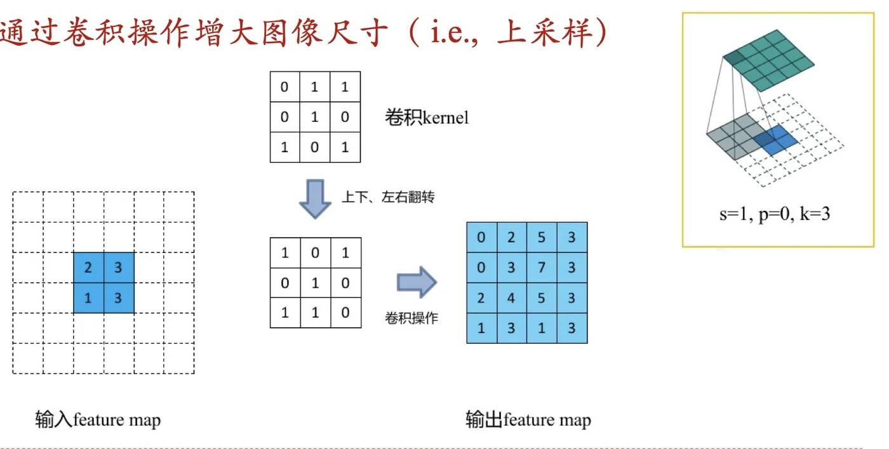
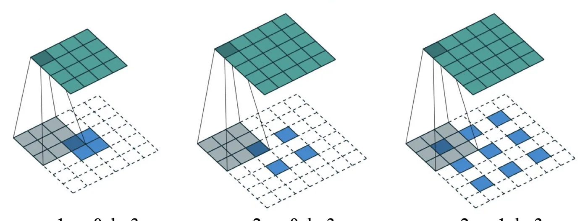
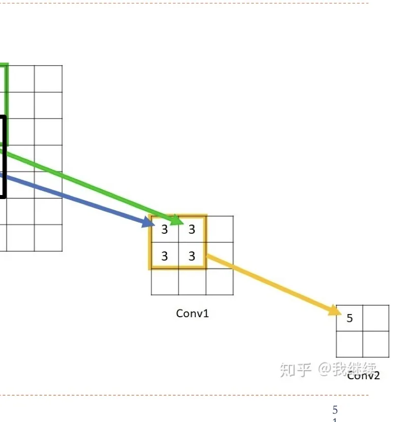
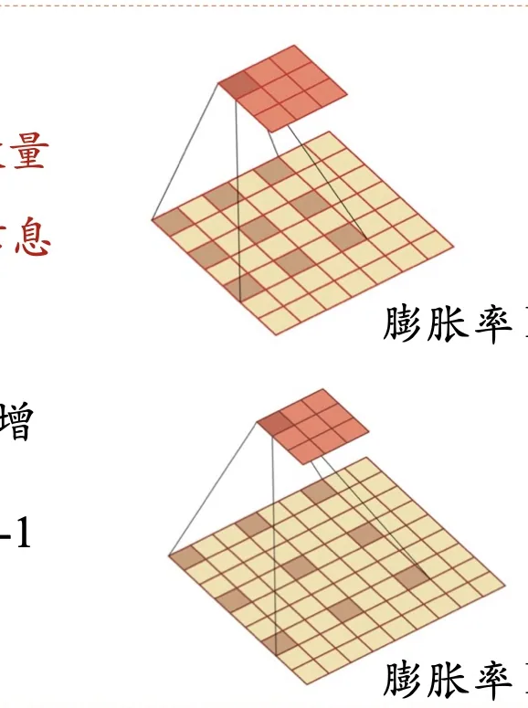

计算机视觉 · 第 6 章 卷积神经网络
6.3 其他卷积方式
6.1 节讲的卷积有一个共同的「副作用」：输出特征图要么变小，要么保持不变，唯独不会变大。但有些任务偏偏需要把特征图放大回去——图像分割要把每个像素都分类，图像生成要从一个向量还原出一幅图，它们都要求网络能够上采样。这一节介绍两种改变卷积「习惯行为」的方式：转置卷积负责放大尺寸，空洞卷积负责在不增加参数的前提下扩大感受野。
1. 从「只能变小」说起：转置卷积的动机
先复习普通卷积的行为。给定一幅特征图，用一个 3 × 3 的卷积核按步长 1 滑动，输出尺寸不变；按步长 2 滑动，输出尺寸减半。也就是说：
普通卷积操作，输出的特征图要么变小，要么保持不变。

这个规律来自 6.1 节的输出尺寸公式 ⌊(M − K + 2P) / S⌋ + 1：只要卷积核大小 K ≥ 1、步长 S ≥ 1，输出就不会比输入大（除非零填充足够多）。而有些网络结构恰恰需要反向操作：先把特征图一步步缩小、提取出高层语义，再一步步放大回来，恢复到原图的尺寸。承担「放大」这件事的卷积就是转置卷积，它的目标很明确——通过卷积操作增大图像尺寸，也就是做上采样。
2. 转置卷积的四步
转置卷积的巧妙之处在于：它并没有发明一种新的运算，而是把普通卷积「拆开」之后再拼回去。设转置卷积核大小为 k、步长为 s、填充为 p，它的操作分四步：
- 在输入特征图的元素之间填充 s − 1 行、s − 1 列（通常是填 0）；
- 在输入特征图的四周填充 k − p − 1 行、k − p − 1 列；
- 将卷积核参数上下、左右翻转；
- 做一次正常的卷积操作（填充 0、步长 1）。
第 1 步是关键：在元素之间插空，等于把输入特征图「撑大」，撑大的倍数正好由步长决定。第 3 步的翻转则呼应了 6.1 节讲卷积定义时提到的「卷积核翻转」——正因为要先翻转再平移，普通卷积和转置卷积在矩阵表示下互为转置，这个名字就是这么来的。

把四步串起来算一遍，就能得到转置卷积的输出尺寸。输入边长为 M 时：元素之间插入 s − 1 个空位，边长变为 s(M − 1) + 1；四周各补 k − p − 1，边长再加 2(k − p − 1)；最后做一次卷积核为 k、步长为 1、无填充的普通卷积，边长减去 k − 1。合起来就是
M′ = s(M − 1) + k − 2p
这个式子的用处在于「配平」：设计网络时常常先定好希望输出多大，再倒推出该取什么样的 k、s、p。它也解释了转置卷积名字里的另一层含义——普通卷积的输出尺寸公式与它正好可以互推。
3. 三种参数组合
参数不同，转置卷积的「放大倍数」就不同。课件给了三组典型组合：
| 组合 | 卷积核 k | 步长 s | 填充 p | 输出尺寸 M′ |
|---|---|---|---|---|
| 组合一 | 3 | 1 | 0 | M + 2 |
| 组合二 | 3 | 2 | 0 | 2M + 1 |
| 组合三 | 3 | 2 | 1 | 2M − 1 |

从表里能看出两个规律：步长决定放大的倍数（s = 2 时输出约为输入的两倍），填充决定放大的偏移量（p 每增加 1，输出边长减少 2）。把两者配合起来，就能让输出尺寸精确地等于想要的值——比如让上采样之后的特征图与它对应的下采样之前的特征图尺寸一致，这正是分割类网络拼接特征时的常见需求。
4. 空洞卷积：给卷积核插「空洞」
第二个要解决的问题是感受野。在 6.1 节我们看到，一个输出单元能「看到」的输入区域由卷积核大小决定；要让输出单元看到更大的区域，课件列出了三种常规办法，但每种都有代价：
- 增加卷积核的大小：感受野确实变大了，但卷积核的参数数量也随之增加（例如从 3 × 3 变成 5 × 5，参数量从 9 涨到 25）；
- 增加卷积层数：靠层层堆叠把感受野撑大，代价是网络更深、计算与优化都更困难；
- 在卷积之前进行汇聚操作：先把特征图缩小再做卷积，等效感受野变大，但汇聚会丢失信息——被丢掉的细节再也回不来了。

空洞卷积给出了一条更划算的路径：通过给卷积核插入「空洞」来变相地增加其大小。具体做法是在卷积核的每两个元素之间插入 D − 1 个空洞（这些位置不参与计算，相当于权重为 0），D 称为膨胀率。

以膨胀率 D = 2 为例：一个 3 × 3 的卷积核插空之后，实际覆盖的范围变成 5 × 5，但参与计算的权重仍然只有 9 个——感受野变大了，参数量没有变。这就同时避开了上面三条路的两个毛病：不像增大卷积核那样增加参数，也不像汇聚那样直接丢掉信息。
这里的空间想象力可以这样建立：普通卷积的采样点是「连着的一片」，空洞卷积的采样点是「稀疏的一片」——它跳着取点，却仍然把整块区域纳入视野。正因为如此，空洞卷积常用在需要大范围上下文、同时又要求保留分辨率的任务里，例如后文 6.6 节的语义分割。
本节小结
- 普通卷积的输出特征图要么变小、要么保持不变；需要放大尺寸（上采样）时要用转置卷积。
- 转置卷积分四步：在输入元素间填充 s − 1 行/列；在四周填充 k − p − 1 行/列；把卷积核上下、左右翻转；再做一次普通卷积（填充 0、步长 1）。它在矩阵表示下与普通卷积互为转置，名字由此而来。
- 转置卷积的输出尺寸为 M′ = s(M − 1) + k − 2p：步长决定放大倍数，填充决定偏移量；先定输出尺寸再倒推参数，是设计网络时的常用做法。
- 要扩大感受野，常规办法有三种（增大卷积核、加深层数、卷积前先汇聚），代价分别是参数变多、网络变深、信息丢失。
- 空洞卷积在卷积核的每两个元素之间插入 D − 1 个空洞（D 为膨胀率），以膨胀率 D = 2 为例，3 × 3 的卷积核覆盖范围变成 5 × 5，而参数量仍是 9 个——感受野变大而参数不变、信息不丢。